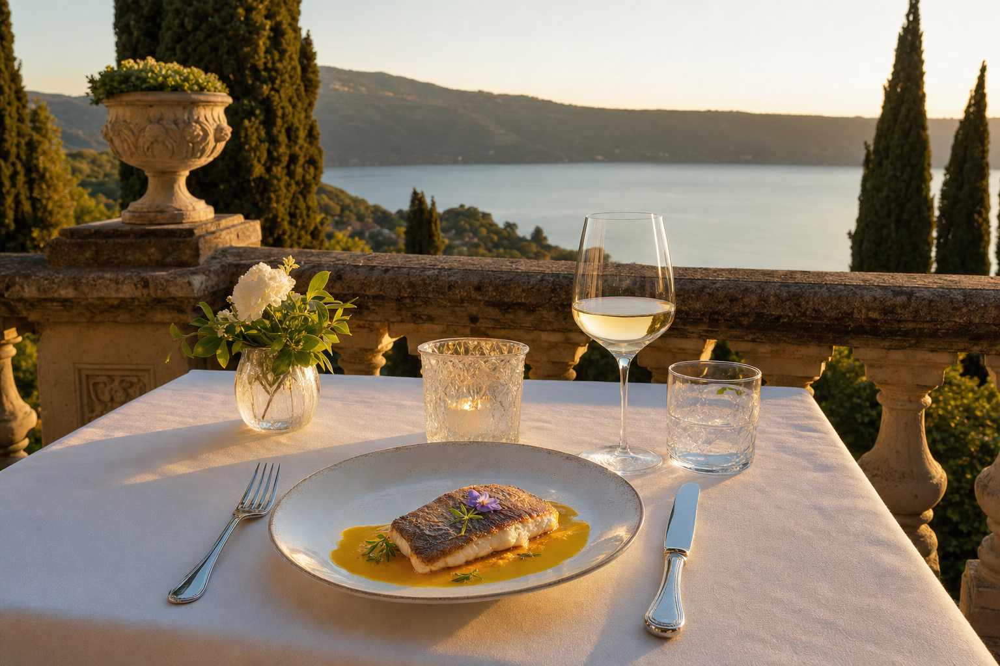

Fine dining · Lake terrace
Antico Ristorante Pagnanelli
Historic restaurant directly overlooking Lake Albano's cliff. Chef-driven Castelli cuisine, tufa-carved wine cellar with over 500 labels, panoramic terrace.
€€€–€€€€2,910 Google reviews
Via Antonio Gramsci 4, Castel Gandolfo